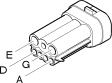

D4B Front/engine connection ( ENGINE )
- Path
- Electrical equipment > Connectors > D Intermediate couplings > D4 Front/engine connection > D4B Front/engine connection ( ENGINE )
- Kind
- connector pinout (pin -> wire colour -> other end)
- Applies to
- engines: 3.2 V6, 1.9 JTD 8v , 2.4 JTD 10v; all production periods
- Interactive page
- https://sloeber94.github.io/elrnDB-a156/en/#/3235577
Applies to: engines: 3.2 V6, 1.9 JTD 8v , 2.4 JTD 10v; all production periods

Wiring | Colour |
|---|---|
NERO (black) |
Topics linked from this page (8)
- 50 ENGINE
- M10A Engine management ECU ( ENGINE )
- M10B Engine management ECU ( ENGINE )
- M10C Engine management ECU ( ENGINE )
- M10D Engine management ECU ( ENGINE )
- M15C Plug preheating control unit ( ENGINE )
- O20A Diesel heater resistance ( ENGINE )
- O20B Diesel heater resistance ( ENGINE )
Topics that link to this page (121)
- 1004B10 power unit with manual gearbox - r + r
- 1004B12 power unit with manual gearbox - r+r for versions with a/c
- 1004B24 power unit with manual gearbox with hydraulic selection - r r
- 1004B26 power unit with aisin and q system automatic transmission
- 1016C10 cylinder head - r + r and replace gasket
- 1056B90 system cable bundle - r + r
- 1072D10 modular inlet manifold - r+r
- 5040A78 Supply and return PIPE to'EVAPORATOR - R.R.
- 5530A10 alternator - r+r
- A30A Ignition coil ( ENGINE )
- A30A Ignition coil ( ENGINE SERVICES BRIDGE )
- A30B Ignition coil ( ENGINE )
- A30B Ignition coil ( ENGINE SERVICES BRIDGE )
- A30C Ignition coil ( ENGINE )
- A30C Ignition coil ( ENGINE SERVICES BRIDGE )
- A30D Ignition coil ( ENGINE )
- A30D Ignition coil ( ENGINE SERVICES BRIDGE )
- B36 Lambda sensor fuse ( FRONT )
- B40 Fuel injection services supply fuse ( FRONT )
- B40 Fuel injection services supply fuse ( FRONT )
- B41 Fuel injection control unit supply relay ( FRONT )
- B41 Fuel injection control unit supply relay ( FRONT )
- B98A Supplementary fuse box ( FRONT )
- B98A Supplementary fuse box ( FRONT )
- B98A Supplementary fuse box ( FRONT )
- B98A Supplementary fuse box ( FRONT )
- B98A Supplementary fuse box ( FRONT )
- B98A Supplementary fuse box ( FRONT )
- B98A Supplementary fuse box ( FRONT )
- B98A Supplementary fuse box ( FRONT )
- B98A Supplementary fuse box ( FRONT )
- C1C Battery earth ( FRONT )
- C10A Front left earth ( FRONT )
- D1 Front / dashboard connection ( FRONT )
- D1 Front / dashboard connection ( FRONT )
- D1 Front / dashboard connection ( FRONT )
- D1 Front / dashboard connection ( FRONT )
- D1 Front / dashboard connection ( FRONT )
- D1 Front / dashboard connection ( FRONT )
- D1 Front / dashboard connection ( FRONT )
- D1 Front / dashboard connection ( FRONT )
- D1 Front / dashboard connection ( FRONT )
- D1 Front / dashboard connection ( FRONT )
- D1 Front / dashboard connection ( FRONT )
- D1 Front / dashboard connection ( FRONT )
- D1 Front / dashboard connection ( FRONT )
- D1 Front / dashboard connection ( FRONT )
- D2A Front / crossmember coupling ( FRONT )
- D2A Front / crossmember coupling ( FRONT )
- D2A Front / crossmember coupling ( FRONT )
- D2A Front / crossmember coupling ( FRONT )
- D4A Front/engine connection ( FRONT )
- D4A Front/engine connection ( FRONT )
- D4A Front/engine connection ( ENGINE )
- D4A Front/engine connection ( ENGINE )
- D4A Front/engine connection ( ENGINE )
- D4A Front/engine connection ( ENGINE )
- D80 Coils and fuel injectors connection ( ENGINE )
- J10 Fuel injection main relay ( FRONT )
- J10 Fuel injection main relay ( FRONT )
- J10 Fuel injection main relay ( FRONT )
- J10 Fuel injection main relay ( FRONT )
- J10 Fuel injection main relay ( FRONT )
- J10 Fuel injection main relay ( FRONT )
- J15 Fuel pump relay ( FRONT )
- J16 Phase transformer relay ( FRONT )
- J17 Diesel preheating relay ( FRONT )
- J17 Diesel preheating relay ( FRONT )
- J30 Engine fan 1st speed relay ( FRONT )
- J30 Engine fan 1st speed relay ( FRONT )
- J30 Engine fan 1st speed relay ( FRONT )
- J30 Engine fan 1st speed relay ( FRONT )
- J31 Engine fan 2nd speed relay ( FRONT )
- J31 Engine fan 2nd speed relay ( FRONT )
- J31 Engine fan 2nd speed relay ( FRONT )
- J31 Engine fan 2nd speed relay ( FRONT )
- J32 Fan 2nd speed relay ( FRONT )
- J32 Fan 2nd speed relay ( FRONT )
- K105 Brake servo vacuum sensor ( FRONT )
- K15 Lambda sensor on pre-catalyzer ( FRONT )
- K16 Lambda sensor on pre-catalyzer -2 ( FRONT )
- K17 Lambda sensor on catalyzer ( FRONT )
- K18 Lambda sensor on catalyzer -2 ( FRONT )
- K35 Coolant temperature sender unit ( ENGINE )
- K36 Engine temperature sender unit ( ENGINE SERVICES BRIDGE )
- K36 Engine temperature sender unit ( ENGINE )
- K40 Lambda sensor ( ENGINE )
- K41 Air flow meter ( ENGINE )
- K41 Air flow meter ( FRONT )
- K46 Rpm sensor ( ENGINE )
- K47 Timing sensor ( ENGINE SERVICES BRIDGE )
- K47 Timing sensor ( ENGINE )
- K83 Fuel pressure sensor ( ENGINE SERVICES BRIDGE )
- L10 Fuel vapour recovery solenoid ( FRONT )
- L10 Fuel vapour recovery solenoid ( FRONT )
- L10 Fuel vapour recovery solenoid ( FRONT )
- L15 Variable geometry control solenoid ( ENGINE SERVICES BRIDGE )
- L20 Air conditioning compressor "on" electromagnet ( ENGINE SERVICES BRIDGE )
- M10A Engine management ECU ( ENGINE )
- M10A Engine management ECU ( ENGINE )
- M10A Engine management ECU ( ENGINE )
- M10A Engine management ECU ( ENGINE )
- M10B Engine management ECU ( ENGINE )
- M10B Engine management ECU ( FRONT )
- M10C Engine management ECU ( ENGINE )
- M10C Engine management ECU ( ENGINE )
- M10C Engine management ECU ( ENGINE )
- M10D Engine management ECU ( ENGINE )
- M10D Engine management ECU ( ENGINE )
- M10F Engine management ECU ( ENGINE )
- M10 Engine management ECU ( ENGINE )
- M15C Plug preheating control unit ( ENGINE )
- M15C Plug preheating control unit ( ENGINE )
- N70A Injector ( ENGINE )
- N70B Injector ( ENGINE )
- N70C Injector ( ENGINE )
- N70D Injector ( ENGINE )
- N74 Idle actuator ( ENGINE )
- N75 Throttle body actuator ( ENGINE SERVICES BRIDGE )
- N76 Timing variator actuator ( ENGINE SERVICES BRIDGE )
- N77 Fuel pressure regulator ( ENGINE SERVICES BRIDGE )